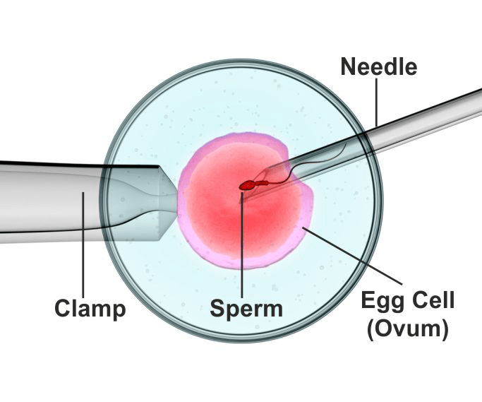

ICSI (Intra-Cytoplasmic Sperm Injection)
A highly advanced fertilization technique used to overcome severe male infertility and improve IVF success.

What is ICSI?
A single healthy sperm is directly injected into an egg to achieve fertilization.
ICSI (Intra-Cytoplasmic Sperm Injection) is an advanced ART (Assisted Reproductive Technology) procedure, primarily used for severe male infertility. Unlike standard IVF—where eggs and sperms are mixed together—ICSI requires only one good sperm, which is manually injected into the egg by an embryologist. This bypasses sperm motility and morphology problems and increases the chances of successful fertilization.
Maa Nursing Home and NetraJyoti Eyecare Centre is equipped with specialized micromanipulation technology and expert embryologists to perform ICSI with high accuracy.
Who Can Benefit from ICSI?
- Very low or zero sperm count
- Poor sperm motility
- Abnormally shaped sperms (poor morphology)
- Obstruction in sperm transport
- Problems with ejaculation
- Egg penetration issues
- Failed fertilization in previous IVF cycles
- High levels of anti-sperm antibodies
- Severe endometriosis in women
Steps in the ICSI Procedure
1) Initial Consultation
Both partners undergo detailed evaluation. Tests help determine sperm quality, ovarian reserve and overall fertility health.
2) Ovarian Stimulation
Fertility injections stimulate the ovaries to produce multiple mature eggs. Ultrasound scans and blood tests track follicle growth and hormonal responses.
3) Egg Retrieval
When follicles mature, eggs are collected using a guided needle inserted through the vagina. This short procedure (about 15 minutes) is done under anaesthesia.
4) Sperm Collection
The male partner provides a semen sample. The best-quality sperms are identified for use. If needed, sperm can be collected earlier and frozen.
5) Embryo Culture (ICSI Step)
A single sperm is injected directly into each mature egg using specialized micromanipulation equipment. Fertilization is assessed the next day.
6) Embryo Transfer
Two to five days after fertilization, healthy embryos are transferred into the woman’s uterus using a thin catheter. A pregnancy test is done after two weeks.
Are There Any Risks?
Children born through ICSI and IVF are generally healthy. However, ICSI may slightly increase the chance of passing on certain genetic conditions—usually linked to the underlying infertility in the parents, not the procedure itself.
ICSI Benefits
- Ideal for severe male infertility
- Requires only one healthy sperm
- Higher fertilization rates
- Helps couples with failed IVF attempts